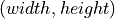

visiannot.configuration.ConfigurationWindow¶
Module defining class ConfigurationWindow
Summary¶
Classes¶
|
Class creating the window for configuring |
API¶
Class ConfigurationWindow¶
Methods for the management of callbacks:
|
Callback method for Load/Save/Done push buttons |
Callback method for annotation directory selection |
|
|
Callback method for opening child configuration window related to signal configuration |
Static methods for converting dictionary to list:
|
Puts the values of a dictionary in a list |
|
Puts the values of a nested dictionary in a nested list |
Methods for widget creation:
|
Creates a window for a child configuration |
|
Adds a widget with the general configuration to the layout |
Methods for loading/saving configuration:
|
Loads a configuration file and store it directly in the configuration dictionaries |
|
Loads a configuration file |
Deletes the whole configuration display and replaces it with the current values of the attribute dictionaries |
|
Sets the configuration dictionaries with the values filled in the GUI |
|
|
Displays the values in the general configuration widget from |
|
Creates a .ini configuration file with the current configuration |
Attributes:
(dict) Each value is an instances of |
|
(list) Types of configuration, each element is a string and must be a key of |
|
(dict) Same keys as |
|
(QtWidgets.QGridLayout) Layout of the general configuration widget |
|
(QtWidgets.QGroupBox) Group box of the general configuration widget |
|
(QtWidgets.QPushButton) Push button for changing the directory of annotations |
|
(QtWidgets.QApplication) Display initializer |
|
(QtWidgets.QWidget) Container of main configuration window |
|
(QtWidgets.QGridLayout) Layout of the main configuration window |
|
(QtWidgets.QButtonGroup) Group of buttons with the push buttons Load/Save/Done |
|
(list) Instances of QtWidgets.QWidget containing the children configuration windows |
|
(dict) Default general configuration, see |
|
(dict) General configuration |
-
class
visiannot.configuration.ConfigurationWindow.ConfigurationWindow(path='')[source]¶ Bases:
objectClass creating the window for configuring
ViSiAnnoTLongRec- Parameters
path (str) – path to the configuration file to load when creating the window
The window is composed of 5 main widgets:
Video configuration
Signal configuration
Eevent annotation configuration
General configuration
Group box with load/save/done push buttons
Each one of the video configuration, signal configuration and event annotation configuration is contained in an instance of
Configuration.The signal configuration has several configuration children (Interval, Threshold and YRange), each one displayed in a separate window.
All the instances of
Configurationare stored in the dictionarymeta_dict.On the one hand, the attribute
ConfigurationWindow.layrefers to the first level of QGridLayout, meaning the layout filling the whole window. On the other hand, the second level of QGridLayout fills the first level layout ConfigurationWindow.lay. These layouts are the configuration widgets (general => ConfigurationWindow.general_lay, video => ConfigurationWindow.meta_dict[“Video”].lay, …).The different types of configuration are stored in 7 dictionaries:
ConfigurationWindow.meta_dict["Video"].dictConfigurationWindow.meta_dict["Signal"].dictConfigurationWindow.meta_dict["Interval"].dictConfigurationWindow.meta_dict["Threshold"].dictConfigurationWindow.meta_dict["AnnotEvent"].dictConfigurationWindow.meta_dict["AnnotImage"].dict
When values are modified manually in the window, these dictionaries are not updated. The method
setConfigurationDictionaries()must be called to do so.- Author
Raphael Weber
-
callLSD(button_id)[source]¶ Callback method for Load/Save/Done push buttons
Connected to the signal
buttonClicked[int]of the button groupbutton_group_lsdThe group button ConfigurationWindow.button_group_lsd has 3 buttons:
button_id == 0 => load configuration file
button_id == 1 => save configuration file
button_id == 2 => set configuration dictionaries and close main window
- Parameters
button_id (int) – index of the button that has been pushed
- Author
Raphael Weber
-
static
convertDictToList(dic)[source]¶ Puts the values of a dictionary in a list
- Parameters
dic (dict) – dictionary
If dic is not a dictionary, then it returns
dic.- Returns
list
- Return type
list
-
static
convertDictToListNested(dic, level=1)[source]¶ Puts the values of a nested dictionary in a nested list
- Parameters
dic (dict) – dictionary
- Returns
list of lists
- Return type
list
- Author
Raphael Weber
-
createChildConfigurationWindow(parent_config, *args, win_size=(0, 0), **kwargs)[source]¶ Creates a window for a child configuration
This method can be used when a configuration type is linked to another one so that the keys in Configuration.dict must be the same.
For example, this applies to the signal configuration. We can specify some threshold values to plot on the signal widgets. The thresholds must be defined for an existing signal, so the keys in the configuration dictionary are the same as in the signal configuration.
As a consequence, when a configuration grid is added in the child configuration window, it has automatically the same key as in the signal configuration and it cannot be changed. If the whole configuration grid for a given key is deleted in the signal configuration, then it is also deleted in the threshold configuration.
This method sets the following attributes:
additional_win_list.additional_lay_list.
- Parameters
parent_config (
Configuration) – parent configurationargs – positional arguments of
Configurationconstructor, starting from the third positionwin_size (tuple) – window size , set one value to 0 to maximize the window
kwargs – keyword arguments of
Configurationconstructor (exceptedparent_configwhich is the first positional argument of this method)
- Author
Raphael Weber
-
createWidgetGeneral(widget_position)[source]¶ Adds a widget with the general configuration to the layout
ConfigurationWindow.layThe widget is contained in an instance of QtWidgets.QGroupBox.
This method sets the following attributes:
- Parameters
widget_position (tuple of integers) – position of the group box in the parent grid layout, length 2
(row, col)or 4(row, col, rowspan, colspan)- Author
Raphael Weber
-
load(path)[source]¶ Loads a configuration file and store it directly in the configuration dictionaries
It calls the static method
loadConfigFile()and then sets the following attributes:ConfigurationWindow.meta_dict[config_type].dictfor config_type inconfig_type_list
- Parameters
path (str) – path to the configuration file to load
- Author
Raphael Weber
-
static
loadConfigFile(path, key_dict={'AnnotEvent': 1, 'AnnotImage': 0, 'General': 0, 'Interval': 2, 'Signal': 2, 'Threshold': 2, 'Video': 1, 'YRange': 1})[source]¶ Loads a configuration file
- Parameters
path (str) – path to the configuration file to load
key_dict (dict) – each item corresponds to a configuration type to retrieve, key is the configuration key, value is the number of nesting levels to apply for converting a nested dictionary (that may be retrieved by ConfigObj) to a nested list (equivalent to
nb_levelof corresponding instance ofConfiguration)
- Returns
configuration dictionary, with the same keys as
key_dict- Return type
dict
- Author
Raphael Weber
-
resetDisplay()[source]¶ Deletes the whole configuration display and replaces it with the current values of the attribute dictionaries
- Author
Raphael Weber
-
setConfigurationDictionaries()[source]¶ Sets the configuration dictionaries with the values filled in the GUI
The configuration dictionaries are:
ConfigurationWindow.meta_dict[config_type].dictfor config_type inconfig_type_list
- Author
Raphael Weber
-
setDirectoryAnnotation()[source]¶ Callback method for annotation directory selection
Connected to the signal
clickedofgeneral_push_button.
-
setGeneralConfiguration(flag_display)[source]¶ Displays the values in the general configuration widget from
general_dictor sets the values ofgeneral_dictfrom the values filled in the general configuration widget (i.e.general_lay)- Parameters
flag_display (bool) – specify if displaying values in the general configuration widget, if
Falsethen it sets the values ofgeneral_dict- Author
Raphael Weber
-
showChildWindow(button_id)[source]¶ Callback method for opening child configuration window related to signal configuration
Connected to the signal
buttonClicked[int]ofConfigurationWindow.meta_dict["Signal"].button_group_children.The group button
ConfigurationWindow.meta_dict["Signal"].button_group_childrenhas as much buttons as children configurations (seeConfiguration.children_configuration_listofConfigurationWindow.meta_dict["Signal"]).- Parameters
button_id (int) – index of the button that has been pushed
- Author
Raphael Weber
-
writeConfigObjFile(path)[source]¶ Creates a .ini configuration file with the current configuration
Before writing the file, the method calls
setConfigurationDictionaries().- Parameters
path (str) – path to the configuration file to create
- Author
Raphael Weber
-
app¶ (QtWidgets.QApplication) Display initializer
(QtWidgets.QButtonGroup) Group of buttons with the push buttons Load/Save/Done
-
children_win_list¶ (list) Instances of QtWidgets.QWidget containing the children configuration windows
-
config_type_list¶ (list) Types of configuration, each element is a string and must be a key of
meta_dict
-
general_config_position_dict¶ (dict) Same keys as
general_dict, value is the list of positions of the corresponding widgets in the general configuration widget (general_lay)
-
general_dict¶ (dict) General configuration
The keys and values are:
"flag_synchro": (bool) specify if the signals are synchronized with video"flag_pause_status": (bool) specify if the video is paused at launching"layout_mode": (int) either 0, 1 or 2"zoom_factor": (int)"down_freq": (float)"max_points": (int)"nb_ticks": (int)"trunc_duration": (list) length 2 (minute, second)"time_zone": (str) time zone (complying with pytz package)"annot_dir_base": (str) base directory of the annotations"from_cursor_list": (list) each element is a list of length 2 (minute, second)"ticks_size": (int) size of the ticks text in signal plots"ticks_color": (list) RGB color of ticks"ticks_offset": (int) space in pixels between ticks and associated values"font_name": (str) font of the text in ViSiAnnoT"font_size": (int) font size in ViSiAnnoT"font_size_title": (int) font size in ViSiAnnoT (title of video widget and progress bar widget)"font_color": (list) RGB color of font in ViSiAnnoT"nb_table_annot": (int) maximum number of labels in one row in annotation widgets"bg_color": (list) RGB color of background in ViSiAnnoT"bg_color_plot": (list) RGB color of background color of signal plots
-
general_dict_default¶ (dict) Default general configuration, see
general_dictfor details
-
general_group_box¶ (QtWidgets.QGroupBox) Group box of the general configuration widget
-
general_lay¶ (QtWidgets.QGridLayout) Layout of the general configuration widget
(QtWidgets.QPushButton) Push button for changing the directory of annotations
-
lay¶ (QtWidgets.QGridLayout) Layout of the main configuration window
-
meta_dict¶ (dict) Each value is an instances of
Configurationcontained in the windowThe keys are:
Video
Signal
Interval
Threshold
YRange
AnnotEvent
AnnotImage
See
Configuration.dictfor details.
-
win¶ (QtWidgets.QWidget) Container of main configuration window